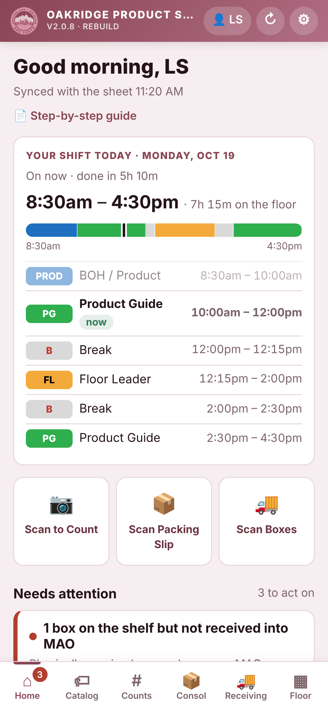
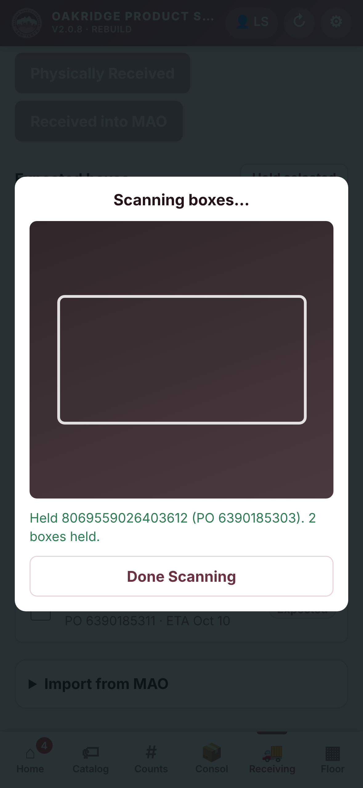
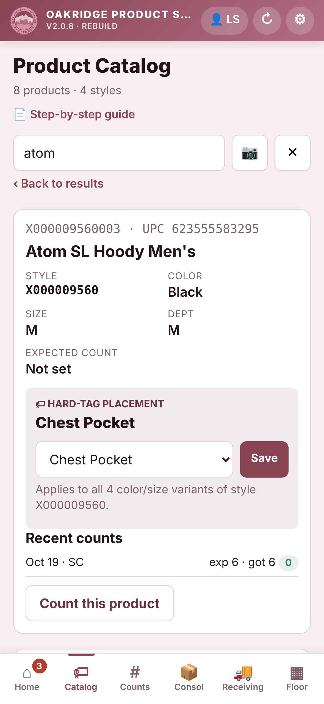

9:41

Every daily task. One app.
2?
BOH
Consolidations · the old way
Three paper copies.
None of them update each other.
Before
Copy, find, tick, initial. Box by box.
Now
Paste once. Scan the boxes.
3:25
min : sec
9:41

1:06
min : sec
Same 5 boxes.
68% less time.
In testing · expected list + physically received
9:41

9:41
Product Catalog
One answer.
For everyone.
Scan any product and see where its hard tag goes. When a lead decides, every phone shows it.
For managers
The day's deployment builds itself from When I Work.
9:41
Oakridge Product Suite
Rebuilt for the floor.